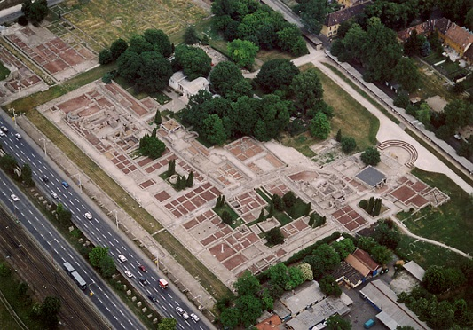
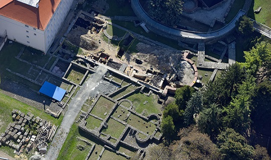
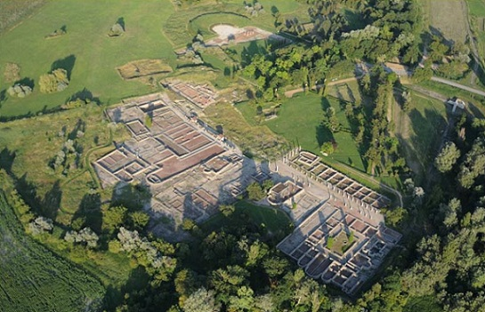

|
H U N G R Í A La actual Hungría formaba parte de las provincias romanas de Pannonia y Dacia, siendo el Danubio su frontera natural. Tra las conquista, los romanos establecieron puestos fronterizos a lo largo de este río, que marcaba los límites del Imperio romano. De época romana destacamos:
Budapest fue fundada por los Celtas hacia el 400a.e.c. Fue
conquistada por Roma en el siglo I. En el siglo II tenia 40.000.-
habitantes. A finales del siglo IV fue conquistada por los Vándalos.

En Pécs, la antigua población romana de Sopianae, destacan sus necrópolis paleocristianas y del palacio del Pretor. En Dunaújváros el campamento romano de Intercisa. De finales del siglo I. En torno al año 180 tras su destrucción en el marco de las guerras de Marco Aurelio contra marcomanos y sármatas, se reconstruyó en piedra. A mediados del siglo III fue parcialmente destruido por ataques roxolanos. Nuevamente reconstruido durante las épocas de la Tetrarquía, Constantino el Grande y Valentiniano. Se cree que el fuerte estuvo habitado hasta mediados del siglo V. En el exterior del campamento, se hallaron restos del vicus civil y de las termas que se desarrollaron al abrigo del campamento militar. En el Museo podremos ver el material arqueológico hallado en las excavaciones realizadas en el yacimiento. Ver: Museo Intercisa Dunaújváros Fenékpuszta y su campamento romano de Valcum. Data del siglo IV. De acceso libre son pocos los restos conservados. Son visibles los cimientos de una de las puertas del campamento, una basílica de triple nave y los almacenes de cereales. En Paks el campamento romano de Lussonium y su museo. Sopron con su foro romano, la antigua Scarbantia, con sus termas, casa, los vestigios del anfiteatro y murallas. En Casa Fabricius. Actualmente es el Museo arqueológico y lo más destacado es su colección de sarcófagos romanos. Era una parada importante a lo largo de la Ruta del Ámbar. Szombathely con su yacimiento arqueológico al aire libre de la antigua Savaria y el Iseum Savariense templo dedicado a Isis.
 Tac
y su parque arqueológico de Gorsium, la Pompeya húngara. Las
excavaciones se iniciaron en 1958. Solo se ha excavado un el 7 por
ciento de toda la ciudad romana. Era un campamento militar que se
convirtió en una prospera
ciudad habitada
por unas 20.000.- personas. Data siglo I-IV.

|